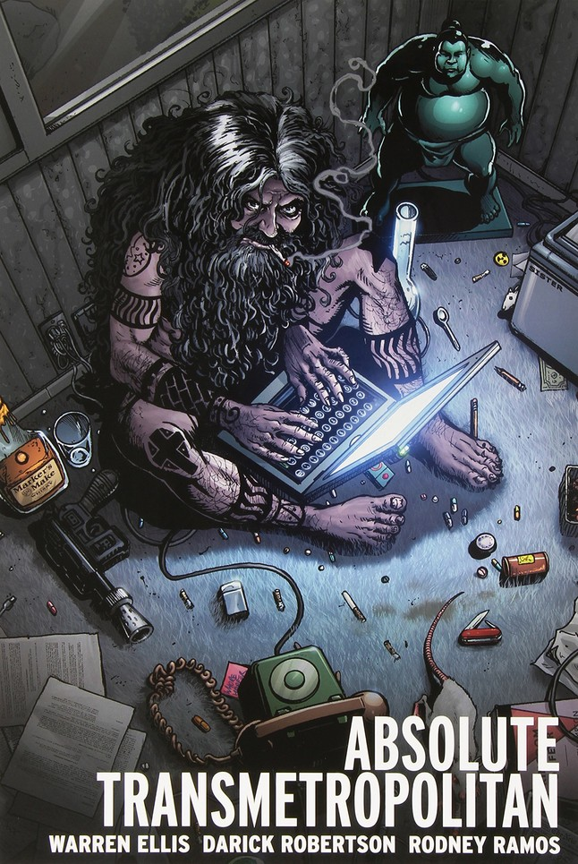

Transmetropolitan is a cyberpunk transhumanist comic book series written by Warren Ellis and co-created and designed by Darick Robertson; it was published by the American company DC Comics in 1997–2002.[1] The series was originally part of the short-lived DC Comics imprint Helix, but upon the end of the book's first year the series was moved to the Vertigo imprint and DC Comics shut down the Helix imprint. Transmetropolitan chronicles the battles of Spider Jerusalem, infamous renegade gonzo journalist of the future.[2] Spider Jerusalem dedicates himself to fighting the corruption and abuse of power of two successive United States presidents. He and his "filthy assistants" strive to keep their world from turning more dystopian than it already is while dealing with the struggles of fame and power, brought about due to the popularity of Spider via his articles. The monthly series began in July 1997 and concluded in September 2002.[3] The series was later reprinted in an array of ten trade paperback volumes, and also featured two "specials" (I Hate It Here and Filth of the City) with text pieces written by the Spider Jerusalem character and illustrated by a wide range of comic artists.[4] These were later collected in trade paperbacks.